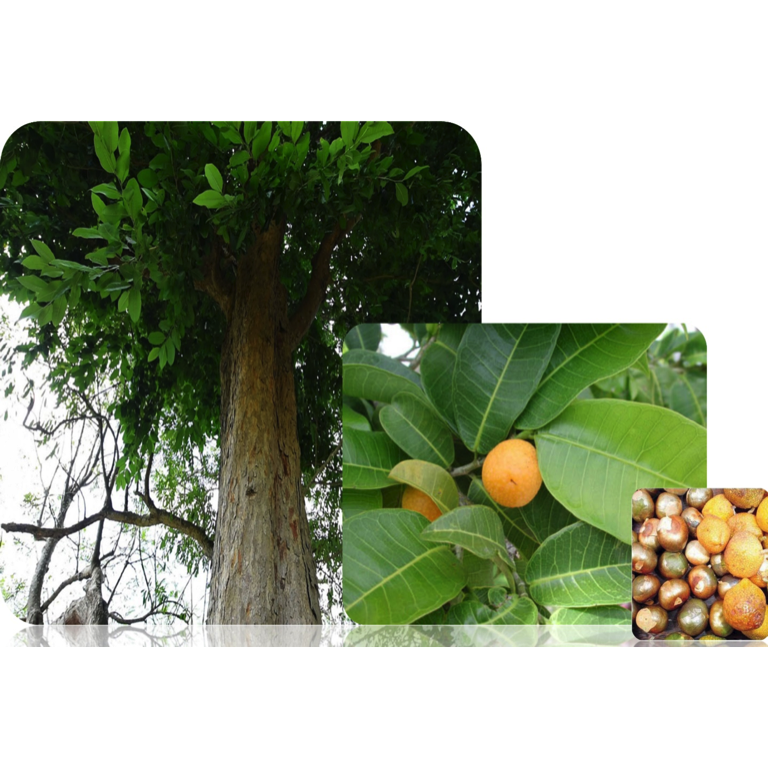

15 Semilla de Ramón
15.1 (Brosimum alicastrum Sw.)

Nina del Rocío Martínez Ruiz1 y Alfonso Larqué Saavedra2
1 Universidad Autónoma de Ciudad Juárez, 2 Centro de Investigación Científica de Yucatán
1 Anillo Envolvente del Pronaf y Estocolmo s/n, Edif. Z-301-302, Zona Pronaf, Ciudad Juárez, Chihuahua. 2 Calle 43 No. 130. Col. Chuburná de Hidalgo, Mérida, Yucatán.
15.2 Introducción
Brosimum alicastrum Sw. es un árbol que ha estado integrado a la vida de la cultura maya desde hace siglos según se reseña en los libros sagrados de los mayas, el Chilam Balam y el Popol Vuh, donde se describe su papel en la alimentación de esta cultura. Existen registros de publicaciones sobre este árbol desde hace más de un siglo (Puleston, 1982). Es un árbol dominante y ampliamente distribuido en las selvas de las regiones tropicales húmedas de México. Su presencia en Mesoamérica está ampliamente documentada (Berg, 1972). En México este árbol es conocido por más de 50 nombres comunes dentro de los que destacan el de ramón, ojite, ojoche, capono, uhi, apomo, entre otros (Pardo-Tejeda & Sánchez-Muñoz, 1980). Pertenece a la familia de las Moraceae, es un árbol perennifolio cuyo hábitat natural es muy diverso. En la Península de Yucatán es común que los árboles se cultiven en el traspatio de las casas de las poblaciones mayas para ser utilizados como forraje (Peters & Pardo-Tejeda, 1982) o como modulador del microclima (Larqué Saavedra, comunicación personal). Este árbol se caracteriza por su alta productividad (Hernández-González, Vergara-Yoisura, & Larqué-Saavedra, 2014) y el uso integral de todas sus partes, desde construcción, ornamentos hasta alimentación y medicina tradicional. Particularmente su semilla se caracteriza por ser fuente importante de proteína, fibra dietaria y micronutrientes (USDA, 2016; Carter, 2015; Larqué-Saavedra, 2014b). La harina de la semilla de ramón posee compuestos fenólicos y una capacidad antioxidante de interés con posibles propiedades funcionales (Ozer, 2017; Tokpunar, 2010). La semilla de ramón es un producto que puede ser aprovechado en el diseño de alimentos nutritivos para consumo humano. En general, Brosimum alicastrum Sw. representa una propuesta de innovación forestal, como parte de la riqueza de la biodiversidad mexicana, que se puede traducir en bienestar social.
15.3 Características agronómicas
15.3.1 Taxonomía y distribución
Brosimum alicastrum Sw. fue descrito desde el año de 1788 y su nombre de origen griego (Brosimos) se refiere al hecho de ser comestible. Es un árbol ampliamente conocido por las diferentes etnias de México y Guatemala y se le conoce comúnmente como “ramón”, aunque recibe diferentes nombres como capomo, hichoso, masico, masiquilla, ujushte de verano, ojoche, lechoso (América Central); árbol de leche, muratinga, guaimero, tilla (Venezuela), mojito, mojote, mujú, ojite, ramón del mico, talcoite, hairi (CONABIO, 1972) (Cuadro 15.1). El nombre de ramón proviene de ramonear, que hace referencia al consumo de sus semillas, plántulas y hojas por el ganado vacuno y otros animales domésticos (Meiners, Sánchez, & De Blois, 2009). Este árbol se ha considerado una especie emblemática de los mayas debido a que fue una fuente principal de alimento junto con el maíz (Carter, 2015). Brosimum alicastrum Sw. ha sido descrita como una de las especies tropicales con alto potencial económico, sin embargo, en la actualidad es subutilizado (National Academy of Sciences, 1975) (Peters & Pardo-Tejeda, 1982).
| Nombre | Lengua | Estado |
|---|---|---|
| A-akl | Tepehuana | Durango |
| Ash-Ahx | Tzeltal | Chiapas |
| Gueltzé | Zapoteca | Oaxaca |
| Hairi-te | Huichola | Jalisco |
| Jauri | Cora | Nayarit |
| Juskapu | Totonaca | Veracruz |
| Lan-fe-lá | Chontal | Oaxaca |
| Moj-cuji | Popoluca | Veracruz |
| Oox | Maya | Yucatán y Quintana Roo |
| Tlatlacóyic | Náhuatl | México |
| Tunumi-tajan | Mixteca | Oaxaca |
| Yashalash | Lacandona | Chiapas |
| Fuente: (Meiners et al., 2009). |
Brosimum alicastrum Sw. es una especie botánica arbórea del género Brosimum proveniente de la familia de las Moraceae, división de las angiospermas. En la Cuadro 15.2 se presenta la clasificación taxonómica del ramón (Brosimum alicastrum Sw.).
| Reino | Plantae |
| Subreino | Viridiplantae |
| División | Tracheophyta |
| Clase | Magnoliopsida |
| Orden | Rosales |
| Familia | Moracea |
| Especie | Brosimum alicastrum Sw. |
| Fuente: (Aragón, 1990). |
Su hábitat natural es muy diverso, se ha reportado su presencia en diferentes tipos de vegetación: se encuentra en selva tropical, bosque tropical perennifolio y caducifolio, matorral espinoso, bosque de ladera, bosque húmedo y matorral xerófilo. Se ha llegado a encontrar en cañadas húmedas de zonas semiáridas. Se ha reportado que en la vegetación asociada al ramón está Vochisioa hodurensis, Inga sp., Robinsonella mirandae, Mirandaceltis monoica, Lonchocarpus sp., Dialium guianense, Spondias sp., Terminalia amazonia, Minikara zapota, Calophyllum brasiliense, Swietenia macrophylla, Vitex ollis, Dendropanax arboreus (Berg, 1972).
En México su distribución por el Golfo abarca desde Tamaulipas y San Luis Potosí hasta Yucatán y Quintana Roo y por el Pacífico desde Sinaloa a Chiapas. Se le encuentra en la Cuenca de Balsas en Michoacán y Morelos (Berg, 1972; CONABIO, 1972) (Figura 15.1). También se localiza en América Central y las Antillas hasta Ecuador y Venezuela en América del Sur (CONABIO, 1972).
Figura 15.1: Distribución del árbol de ramón en México (Brosimum alicastrum Sw.). Fuente: (Peters & Pardo-Tejeda, 1982).
15.3.2 Características de la planta
Es un árbol tropical perennifolio, con altura entre 25 a 40 m, aunque hay ejemplares de hasta 45 m en Chiapas, Tabasco y Guatemala (Pennington & Sarukhán, 2005). En Yucatán varían entre 15 y 22 m de altura (Durán, Dorantes, & Méndez, 2000) y en diámetro de 70 a 150 cm, de copa redondeada a umbelada, follaje verde oscuro, con ramas oblicuamente ascendentes, fuste recto, cilíndrico, de base alargada o con gambas cóncavas. La corteza es áspera, gris a negruzca-gris, con lenticelas y se desprende en láminas escamosas. El grosor total de la corteza varía de 0.5 a 1 cm. Las hojas son simples, enteras, alternas, elípticas a elíptico-oblongas, de 8 a 18 cm de largo y de 4 a 4.75 cm de ancho; posee un pecíolo de 0.5 cm de largo, ápice agudo a acuminado, de color verde oscuro lustroso y envés verde pálido y opaco. El fruto es una baya globosa con pericarpio carnoso y comestible; mide de 1.5 a 2.5 cm de diámetro, de color verde amarillento a anaranjado en su madurez, se encuentra cubierto por diminutas escamas y contiene una sola semilla (CONABIO, 1972). Sus raíces son fuertes, pivotantes, algunas superficiales y otras penetran profundamente hasta alcanzar el manto freático (Burgos, 1982; Peters & Pardo-Tejeda, 1982) y se ha señalado que es tolerante a la sequía e inundaciones (Puleston, 1982).
La expresión sexual de Brosimum alicastrum Sw. no está totalmente dilucidada. Es una especie monoica y existen árboles femeninos o masculinos (Berg, 1972) cuya fecundación es anemófila, que presenta además geitonogamia, es decir, favorece la fecundación cruzada. Se estima que hay árboles hermafroditas que producen un porcentaje muy bajo de semillas que no llega a ser superior al 2% del total de las semillas colectadas en núcleos de árboles en las selvas de Veracruz. En Yucatán, México se encontró que en plantaciones cercanas a los 100 años, tres de ellas hechas por el hombre, el 64% mostraron ser masculinas y hermafroditas y 36% femeninas (Larqué-Saavedra, datos no publicados).
15.3.3 Condiciones de cultivo y bioproductividad
Los árboles pueden crecer en suelos con limitación de nutrientes y debido a su capacidad para almacenar agua, no requieren riego durante la estación seca (Berg, 1972). Las condiciones para el desarrollo de Brosimum alicastrum Sw. se presentan en la Tabla 15.3.
| Condiciones Ambientales | Condiciones Ambientales | Suelo | Suelo | Mejor crecimiento |
|---|---|---|---|---|
| Pluviometría (mm) | 1000-3500 | Suelos | Aluviales fértiles y alcalinos, incluyendo topografía cárstica de origen calizo y litosoles. | < 300 msnm |
| Estación seca (meses) | 0-6 | 1000-3500 | Suelos | Aluviales fértiles y alcalinos, incluyendo topografía cárstica de origen calizo y litosoles. |
| Altitud (msnm) | 0-1000 | Textura | Media | Suelos |
| T máx (cálida) (°C) | 20-40 | pH | 6.8 a >8.2 | Media |
| T min (frío) (°C) | 12-18 | Drenaje | Libre (bien drenados) | 6.8 a >8.2 |
| T media anual (°C) | 15-35 | Libre (bien drenados) | ||
| Fuente: (Blancas, 2015). |
La propagación del ramón puede ser a partir de la semilla con una germinación entre el 89 y 95% y un tiempo de inicio de 8 a 10 días. La propagación asexual está poco estudiada, pero por evidencias experimentales no se ha podido ratificar que se pueda propagar por estacas como se ha publicado (Larqué-Saavedra, 2014). Tiene buena capacidad para competir con malezas y es una especie de lento crecimiento. Los individuos jóvenes (diámetro de 1 a 8 cm) crecen en promedio 0.1 cm; los de 8.1 a 16 cm crecen 0.3 cm/año y los de 16 a 32 cm crecen 0.5 cm/año. Los árboles adultos (>32 cm de diámetro) crecen 1.3 cm/año (Hernández-González, Vergara-Yoisura, & Larqué-Saavedra, 2015; Berg, 1972). Es una especie de muy larga vida, a los siete años se ha observado la aparición de sus primeras flores (Hernández-González et al., 2015). En plantaciones comerciales, Brosimum alicastrum Sw. demanda disponibilidad de agua, al menos en los dos primeros años, para que la raíz penetre entre el suelo pedregoso y pobre para posteriormente prosperar y desarrollarse. Con un adecuado manejo y riego adicional en este tipo de suelo, los árboles de ramón sobreviven bien y han mostrado abundante follaje. A los 5.5 años se considera una fase de crecimiento rápido y casi lineal. Su mayor crecimiento se presenta durante la época de lluvias (Hernández-González et al., 2015).
La bioproductividad del árbol de ramón es una importante cualidad, se estima que un árbol de ramón puede producir entre 60 y 75 kg de semillas/año, sin embargo un estudio en Yucatán indicó que árboles de más de 25 años producen 95.5 kg de semilla/año (peso fresco) y 163.4 kg/ha/año de follaje (Hernández-González et al., 2014), por lo que se ha calculado que una plantación comercial de 250 árboles/ha produce entre 20 y 25 ton/ha/año de semilla y 48.9 ton/ha/año de follaje (Larqué-Saavedra, 2014), superior a lo que produce una gramínea en un sistema intensivo de cultivo (ej. el maíz 3.3 ton/ha en México). Ayala y Sandoval (1995) reportaron que plantaciones experimentales de árboles de 4 años de edad producen de 10 a 15 ton/ha de follaje en cada poda y que se pueden realizar 3 cortes al año, por lo tanto, estas plantaciones producen dos veces más pastura que otros forrajes establecidos (Larqué-Saavedra, 2014). El principal uso del ramón en Yucatán es como forraje, aprovechándose hojas y ramas tiernas, las cuales pueden presentar entre 8 y 30% de proteína cruda, con mejores características que una leguminosa como Leucaena leucocephala (peladera o huaxin) y es bien aceptado por el ganado (Ayala & Sandoval, 1995).
Brosimum alicastrum Sw. tiene la capacidad fisiológica y fotosintética para adaptarse a condiciones de mucha luz, incluso en la estación seca, presenta una alta eficiencia en el uso del agua y es capaz de prosperar bajo una variedad de condiciones con limitada disponibilidad de agua, lo cual le confiere una ventaja adaptativa de relevancia ecofisiológica. En su patrón de fijación de bióxido de carbono y transpiración en árboles adultos, se ha definido como una planta tipo C3, con una fijación máxima de 5 μmol m2 s1 a 500 μmol m2 s1 de luz, con una eficiencia de uso de agua entre 0.55 y 1.55 μmol/mmol-1, dependiendo de la hora del día (Hernández-González, Vergara Yoisura, & Larqué-Saavedra, 2014). En México, el ramón florece principalmente de noviembre a febrero, aunque también se pueden encontrar flores fuera de época. En Veracruz florece de enero a mayo y en Campeche y Quintana Roo en abril-mayo, enero-marzo-junio. Los frutos maduran de marzo a mayo aproximadamente y en Yucatán entre abril y septiembre. El desarrollo de los frutos es muy rápido (Berg, 1972).
El ramón favorece la restauración de suelos y su conservación contrarresta el efecto de vientos fuertes y recupera terrenos degradados por actividades agrícolas o pecuarias. El ramón provee protección a las cuencas hidrográficas, conserva la biodiversidad, captura carbono, da protección a los bosques y paisajes. Se estima que Brosimum alicastrum Sw. puede ser potencialmente el primer árbol oxalogénico que produce una cantidad significativa de alimento (Blancas, 2015) y se ha propuesto como una especie ideal para establecer cortinas rompevientos. Está reportada su importancia en el mantenimiento y conservación de la fauna; por ejemplo, 39 especies y 10 familias de aves se alimentan del fruto, asimismo venados y jabalíes (Berg, 1972). Este árbol es un indicador común para ubicar asentamientos mayas, ya que por lo general se encuentra alrededor de las ruinas de esta cultura, hecho que fue reportado por los arqueólogos desde 1935 (Lambert & Arnason, 1982; Cook, 1935).
15.3.4 Plagas y enfermedades de Brosimum alicastrum Sw.
El ramón es atacado por insectos que se alimentan de su madera dura como lo son Xyleborus ferrugineus (F.) y X. morigerus (Blandford) (Muñoz-Flores, Sáenz-Reyes, & Rueda-Sánchez, 2011) y de sus hojas Trioza resellae Tuthill (agallador) (Ascencio-Álvarez et al., 2015). Algunos insectos del ramón se muestran en la Figura 15.2.
Figura 15.2: Algunas plagas de insectos en hojas de Brosimum alicastrum Sw. Fuente: (Ascencio-Álvarez et al., 2015).
Trioza resellae Tuthill produce agallas en las hojas de ramón, estas lesiones limitan la fotosíntesis y el crecimiento del árbol, afectando su rendimiento. Este insecto es la más importante plaga, produce de 400-600 agallas por hoja. Las agallas son estructuras tisulares anormales que se desarrollan debido a una reacción específica a la actividad de un cuerpo inductor (Ascencio-Álvarez et al., 2015)*.**Acrocinus longimanus es un escarabajo tropical nativo del sur de México hasta Brasil, el cual causa la destrucción de la madera del árbol, los huevos son colocados por las hembras adultas, en orificios sobre la corteza del árbol, utilizando sus mandíbulas. La larva se alimenta de la madera, donde posteriormente empupa, para emerger como adulto y continuar el ciclo (Velado & Pablo, 2012). Entre los depredadores de su semilla se tiene principalmente a dos roedores: Heteromys desmarestiantus* y Dasyprocta punctata (Berg, 1972).
En relación con hongos patógenos en el ramón, se han identificado Cercospora sp., Chalara sp., Colletotrichum sp., Fusarium, Gilmaniella sp., Tubercularia sp, (Benítez, 2012) y Alternaria alternata (Figura 15.3). Las enfermedades causadas por hongos son comunes en los ecosistemas forestales neotropicales. Atacan las plantas en las diferentes etapas de su ciclo vital, siendo las hojas los órganos más afectados, sufriendo necrosis, clorosis y deformación, lo cual afecta la fotosíntesis y el crecimiento, la supervivencia, reproducción y capacidad competitiva de la planta hospedera (Benítez, 2012).
Figura 15.3: Algunos hongos patógenos identificados en hojas de Brosimum alicastrum Sw. Fuente: imágenes proporcionadas por el CICY (Dr. Alfonso Larqué Saavedra).
15.4 Obtención y características nutrimentales de la semilla de ramón
Para la obtención de la harina de ramón, de forma tradicional, la semilla debe perder al menos el 80% de su peso en agua y posteriormente se muele en un molino con mallas para que la harina tenga un tamaño de partícula homogéneo (Larqué-Saavedra, datos no publicados). Otra forma de obtener la harina de ramón es cocerla en agua a 98 °C durante 1 h, después se seca en horno de convección con aire a 75 °C hasta alcanzar un contenido de agua no superior al 10%, por último, la semilla se pulveriza en un molino de martillos y ciclón por 2 min reduciendo el tamaño de su partícula a 500 micras (35 mesh) (Arévalo & Bressani, 2013).
La semilla del árbol del ramón se define como un producto orgánico. El contenido nutrimental de la harina de esta semilla puede variar dependiendo del lugar donde crece este árbol, particularmente en algunos estados de México y en países de Centroamérica (Tabla 15.4).
| Aporte nutrimental | Aporte nutrimental | Aporte nutrimental | Aporte nutrimental | Aporte nutrimental | Aporte nutrimental | Aporte nutrimental | Aporte nutrimental | |||
|---|---|---|---|---|---|---|---|---|---|---|
| Lugar | Referencia | Calorías (kcal) | Calorías (kcal) | Humedad (g) | Proteína (g) | Grasa (g) | Ceniza (g) | Carbohidratos (g) | Fibra dietaria (g) | |
| Yucatán | (Cravioto, 1952)** | — | — | 14.4 | 0.9 | 3.4 | 81.3 | — | ||
| Yucatán | (INCAP-ICNND, 1961) | 363 | 363 | 6.1 | 12.1 | 1.7 | 4.7 | 81.5 | — | |
| Yucatán | (Larqué-Saavedra, 2014) | 312 | 312 | 13.3 | 13.0 | 1.3 | 3.9 | 81.8 | 15.0 | |
| Veracruz | (INPI, 1976) | — | — | 12.2 | 10.2 | 2.0 | 4.7 | 81.5 | — | |
| Honduras | (Zamorano, 2009)** | 281 | 281 | 7.7 | 8.8 | 1.4 | 4.0 | 85.9 | 21.7 | |
| Guatemala* | (Arévalo & Bressani, 2013) | — | — | 8.3 | 11.5 | 0.8 | 4.1 | 83.7 | 14.0 | |
| Guatemala | (Carter, 2015) | — | — | 9.7 | 10.4 | 0.7 | 3.8 | 85.1 | 13.0 | |
| Nicaragua | (Carter, 2015) | — | — | 11.8 | 11.7 | 0.6 | 4.1 | 83.6 | 16.3 | |
| (g/100 g de harina). *Datos convertidos a base seca para comparación. **(Carter, 2015). |
FAO clasifica a esta especie como “GRAS”, es decir inocua, donde el fruto, la semilla, madera, hojas y látex son fuentes de materia prima para alimentación y forrajes (FAO, 2012). La harina de semilla de Brosimum alicastrum Sw. en general se caracteriza por tener un alto contenido de proteína (11.4-13.4 %), fibra dietaria (13.0-16.0 %), minerales (4.8-4.1 %), un bajo contenido de grasa (0.6-1.3 %), una humedad promedio de 6.5-13.3%, carbohidratos totales entre 81.8-85.1% y un aporte calórico de 3.4 a 4.1 kcal/g de harina (USDA, 2016; Carter, 2015; Larqué-Saavedra, 2014b). No obstante, y a excepción de Honduras, el contenido de proteína en la harina de ramón es mayor a la del trigo, maíz y arroz (9.3, 9.8 y 7.2% respectivamente), granos que son usados tradicionalmente como base de la alimentación en diferentes culturas (Carter, 2015).
El perfil de aminoácidos de la harina de semilla de ramón indica que proporciona proteínas de alta calidad biológica (Cuadro 15.5) (Carter, 2015). La harina contiene lisina y triptófano, aminoácidos que se encuentran limitados en las dietas de México y Centro América (Peters & Pardo-Tejeda, 1982).
| Aminoácidos | Contenido (g/ 100 g de harina)) |
|---|---|
| Ácido aspártico | 0.951 |
| Triptófano | 0.234 |
| Ácido glutámico | 5.206 |
| Leucina | 0.935 |
| Prolina | 0.429 |
| Arginina | 0.793 |
| Serina | 0.577 |
| Valina | 0.834 |
| Fenilalanina | 0.407 |
| Glicina | 0.541 |
| Treonina | 0.335 |
| Alanina | 0.392 |
| Isoleucina | 0.488 |
| Tirosina | 0.634 |
| Lisina | 0.376 |
| Histidina | 0.132 |
| Metionina | 0.050 |
| Cistina | 0.135 |
| Fuente: (USDA, 2016). |
La harina de ramón tiene bajo contenido en grasa (0.6 a 1.3 g), y sus principales ácidos grasos son ácido linoleico (55.1%), palmítico (27.2%), linolénico (9.9%), esteárico (6.3%) y eicosanoico (3.4%) (Tokpunar, 2010). La harina tiene un importante aporte de micronutrientes (Tabla 15.6), particularmente en riboflavina, niacina, vitamina A, vitamina C, calcio, magnesio, fósforo, potasio y hierro por 100 g de harina (USDA, 2016; Carter, 2015; Larqué-Saavedra, 2014b) los cuales son mayores a los que aporta una harina integral de maíz amarillo (USDA, 2017).
| Vitaminas | Contenido | Minerales | Contenido* |
|---|---|---|---|
| Riboflavina (mg) | 0.14 | Calcio (mg) | 94.00 |
| Ácido Pantoténico (mg) | 1.87 | Cobre (mg) | 2.45 |
| Niacina (mg) | 2.10 | Hierro (mg) | 4.60 |
| Tiamina (mg) | 0.03 | Magnesio (mg) | 115.00 |
| Vitamina A (mg)* | 73.93 | Manganeso (mg) | 0.30 |
| Vitamina B6 (mg) | 0.68 | Fósforo (mg) | 178.00 |
| Vitamina C (mg) | 46.60 | Potasio (mg) | 2011.00 |
| Ácido fólico (µg) | 26.87 | Sodio (mg) | 53.00 |
| Zinc (mg) | 1.91 | ||
| *Por 100 g de harina (base seca). Fuente: (USDA, 2016; Flaster, 2007). |
Desafortunadamente, las propiedades de la harina de ramón (B. alicastrum Sw.) son desconocidas en muchos lugares del país, siendo particularmente en el sur, donde se da con mucha facilidad mientras que en los municipios de Tzucacab, Ticul y Oxkutzcab (Yucatán, México) únicamente es empleado como alimento para animales (Hernández, Munguía, & Monforte, 2015).
15.5 Contenido de fitoquímicos y propiedades antioxidantes
En sus propiedades antioxidantes, la harina de la semilla de B. alicastrum Sw. contiene más compuestos polifenólicos (24.7 mg EAG/g) que la nuez (8.1 mg EAG/g), cacahuate (4.3 mg EAG/g) o almendra (0.9 mg EAG/g,) y una capacidad antioxidante (92.5% Inh-ABTS y 78.1% DPPH) similar a la nuez (92.2% Inh-ABTS y 84.8% DPPH), pero mayor que la del cacahuate (91.1% Inh-ABTS y 45.5% DPPH) y la almendra (58.9% Inh-ABTS y 45.5% DPPH) (Tokpunar, 2010). Recientemente se ha reportado que la semilla de ramón tiene un contenido en ácidos fenólicos (ácido gálico, ácido p-hidroxibenzoico, ácido vanílico, ácido cafeico y ácido p-cumárico) que va de 6.5 a 326 μg/g, siendo el ácido p-hidroxibenzoico el principal compuesto fenólico (Ozer, 2017) (Figura 15.4 y 15.5).
Figura 15.4: Cromatograma HPLC de ácidos fenólicos libres en semilla de ramón. Extracción metanol-ácido acético, 280 y 329 nm. 1 –ácido gálico, 2 –ácido p-hidroxibenzoico, 3 –ácido vanílico y 4 – ácido cafeico. Fuente: (Ozer, 2017).
Figura 15.5: Cromatograma HPLC de ácidos fenólicos en semilla de ramón. Hidrólisis alcalina, 280 y 329 nm. 12 – ácido p-hidroxibenzoico, 3 –ácido vanílico, 4 –ácido cafeico, 5 –ácido p-cumárico y 6 –epicatequina. Fuente (Ozer, 2017).
15.6 Usos del ramón
Brosimum alicastrum Sw. es un árbol que se caracteriza por su uso integral de manera tradicional (Figura 15.6). Entre los usos más comunes que se le han dado al árbol destaca el aprovechamiento de su madera que se obtiene del tronco para la construcción de tarimas, material para elaborar artesanías, mangos para herramientas, fabricación de artículos torneados y como pulpa para papel (Batis, Alcocer, Gual, Sánchez, & Vázquez-Yanes, 1999).
Figura 15.6: Figura 15.6 .Usos tradicionales del árbol Brosimum alicastrum Sw. Fuente: imagen proporcionada por el grupo de investigación del CICY (Dr. Alfonso Larqué Saavedra).
El uso del follaje para alimentación de ganado ubica a Brosimum alicastrum Sw. como una excelente fuente de proteína cruda (13-17%) suficiente para el mantenimiento de la microbiota ruminal (> 7%) y de fibra neutro detergente (36-46 %), además de mostrar los animales una preferencia por el consumo del follaje arbóreo de ramón en comparación con el “Huaxin” (Leucaena leucocephala) (Rojas-Schroeder, Sarmiento-Franco, Sandoval-Castro, & Santos-Ricalde, 2017). Sus hojas, semillas y tallo joven se utilizan como alimento pecuario (Berg, 1972). Su corteza, látex y hojas se usan para elaborar tónicos e infusiones para problemas renales, tos, dolores de pecho y asma (Peters & Pardo-Tejeda, 1982) (Cuadro 15.7).
| Aprovechamiento | Estructuras vegetativas |
|---|---|
| Follaje | Hojas y semillas |
| Poste | Ramas |
| Leña | Ramas |
| Construcción de casas | Tallo |
| Herramientas de trabajo | Ramas |
| Muebles | Tallo |
| Miel | Flores |
| Comestible | Semillas |
| Medicina tradicional | Semillas, corteza, hojas y látex |
| Fuente: (Orantes, Caballero, & Velázquez, 2012). |
En diferentes partes del país, el ramón es utilizado como alimento para los humanos, tal es el caso de diferentes zonas de las huastecas, Sinaloa, Jalisco, Nayarit y Chiapas, entre otros. Los habitantes de tres comunidades de Chiapas utilizan las semillas como alimento en diversos platillos. La forma de utilizar las semillas consiste en tostarlas y molerlas para obtener una harina que se usa principalmente en la elaboración de tamales, atole, café y tortillas, también se colectan las semillas y se hierven con azúcar para preparar un dulce. El cocimiento de la corteza se utiliza para el tratamiento de la diabetes, las semillas preparadas en atole se utilizan para la producción de leche materna, el látex se usa como anestésico para la extracción de dientes (Orantes et al., 2012).
15.7 Perspectivas sobre el ramón
A pesar de ser una especie con propiedades de interés nutrimental y potencialmente funcionales, Brosimum alicastrum Sw. está poco desarrollado y utilizado, a pesar del conocimiento ancestral de este árbol. Actualmente no existen plantaciones comerciales de ramón, condición que se debe estimular debido a la dependencia de granos que tiene México actualmente. Por lo antes señalado, el Centro de Investigación Científica de Yucatán (CICY) ha estado dando seguimiento a un proyecto integral sobre el ramón (Figura 15.7). Este proyecto considera al árbol de Brosimum alicastrum Sw. como una especie multifuncional, con diferentes servicios ambientales que se deben de cuantificar a través de estudios con alto impacto ambiental, por ejemplo en la captura de CO2 (Hernández-González et al., 2014), reforestación, restauración de suelos, resistencia de la especie a sequías e inundaciones y su producción de biomasa, entre otros. En energía se tienen ya estudios sobre la producción de biocombustibles, como el etanol (Olguin-Maciel et al., 2017). Muchos de estos estudios se han desarrollado en el Banco de Germoplasma del trópico mexicano del CICY.
Figura 15.7: Proyecto del grupo de Investigación de CICY sobre Brosimum alicastrum Sw.
En el impacto alimentario, particularmente se ha impulsado el establecimiento de empresas de base tecnológica como agroindustrias para la producción de alimento pecuario y de consumo humano. En el desarrollo de agroindustrias, Kishur, es una empresa de base tecnológica, ubicada en Chocholá, Yucatán, México dedicada 100% a la comercialización de productos de ramón. Esta empresa es una sociedad de producción rural que genera una actividad agroindustrial sostenida con impacto social y económico para la región. En esta empresa se comercializan dos productos desarrollados por el CICY, como lo es la harina de Brosimum alicastrum y un alimento pecuario bajo la denominación de Maya-Óox (Figura 15.8).
Figura 15.8: Productos alimentarios de ramón desarrollados por el CICY. Fuente: imágenes proporcionadas por el CICY (Dr. Alfonso Larqué Saavedra).
El grupo de trabajo de la Universidad Autónoma de Ciudad Juárez (CA Química y Alimentos, CA Salud Comunitaria) actualmente trabaja en el diseño y estudio de las propiedades nutrimentales y funcionales de la harina de semilla de ramón, así como de alimentos diseñados para consumo humano que contienen harina de B. alicastrum Sw. Entre los alimentos que ya se tienen hay una bebida para niños y jóvenes escolares, una tortilla de harina de trigo parcialmente sustituida con harina de ramón y un alimento con alto aporte de proteína especialmente diseñado para el adulto mayor con presarcopenia (datos recientes no publicados).
15.8 Referencias
Aragón, U. R. (1990). Caracterización preliminar del ramón (Brosimum alicastrum Swartz), in situ en el bosque muy húmedo subtropical cálido de Peten, Guatemala. Universidad de San Carlos Guatemala.
Arévalo, A., & Bressani, R. (2013). Respuesta glicémica de la semilla de Ramón (Brosimum alicastrum) en mujeres de 16 a 25 años de edad, residentes de la ciudad capital, Guatemala. Revista 25 de La Universidad de Guatemala, 66–71.
Ascencio-Álvarez, A., Martín-Mex, R., Tucuch-Haas, J. I., Valdez-Carrasco, J., Huchin-Poot, E. G., Andrade-Canto, S. B., … Larqué-Saavedra, A. (2015). Identificación del insecto agallador (Trioza rusellae Tuthill) en hojas de Brosimum alicastrum Swartz en Yucatán, México. Revista Chapingo, Serie Ciencias Forestales Y Del Ambiente, 21(1), 123–132.
Ayala, A., & Sandoval, S. M. (1995). Establecimiento y producción temprana de forraje de ramón (Brosimum alicastrum Swartz) en plantaciones a altas densidades en el norte de Yucatán, México. Agroforestería de Las Américas, 2(7), 1–7.
Batis, A., Alcocer, M., Gual, M., Sánchez, C., & Vázquez-Yanes, C. (1999). Árboles y arbustos nativos potencialmente valiosos para la restauración ecológica y la reforestación. México.
Benítez, J. (2012). Hongos patógenos en la selva. Investigación Y Ciencia, enero, 36–42.
Berg, C. (1972). Brosimum alicastrum. Flora Neotrópica. Monograph, 7, 183–186.
Blancas, J. (2015). Análisis sistémico del aprovechamiento sustentable de la semilla del árbol de ramón (Brosimum alicastrum) en Bacalar, Quintano Roo, México. Periodo 201-2014. Universidad de Quintana Roo.
Burgos, G. (1982). Brosimum alicastrum Swartz posibilidades de utilización en la alimentación. Universidad Autónoma de Yucatán.
Carter, C. T. (2015). Chemical and Functional Properties of Brosimum Alicastrum Seed Powder (Maya Nut , Ramón Nut). Clemson University, USA.
CONABIO. (1972). Brosimum alicastrum Sw.
Cook, O. F. (1935). The Maya Breadnut in Southern Florida. Science, 27, 615–616.
Durán, R. A., Dorantes, P. S., & Méndez, M. (2000). Manual de propagación de plantas de la Península de Yucatán. Mérida, Yucatán: Centro de Investigación Científica de Yucatán.
FAO. (2012). The State of the World’s Forest Genetic Resources. Country Report Mexico. México.
Flaster, T. (2007). Brosimum Alicastrum SW.) And B. Alicastrum- Derived Ingredients for use in Traditional Foods Generally Recognized as Safe (GRAS) Self- Affirmation Report.
Hernández-González, O., Vergara-Yoisura, S., & Larqué-Saavedra, A. (2014). Studies on the productivity of Brosimum alicastrum a tropical tree used for animal feed in the Yucatan Peninsula. Bothalia Journal, 44(6), 70–81.
Hernández-González, O., Vergara-Yoisura, S., & Larqué-Saavedra, A. (2015). Primeras etapas de crecimiento de Brosimum alicastrum Sw. en Yucatán. Revista Mexicana de Ciencias Forestales, 6(27), 38–48.
Hernández-González, O., Vergara Yoisura, S., & Larqué-Saavedra, A. (2014). Photosynthesis, Transpiration, Stomatal Conductance, Chlorophyll Fluorescence and Chlorophyll Content in Brosimum alicastrum. Bothalia Journal, 44(6), 165–176.
Hernández, V., Munguía, A., & Monforte, G. (2015). Caracterización De La Producción Con Árboles De Ramón (Brosimum Alicastrum Sw.) Y Sus Derivados Para El Desarrollo Sustentable De La Región Sur Del Estado De Yucatán. Cuernavaca, Morelos, México.
INCAP-ICNND. (1961). Composición de alimentos comúnmente usados en América Latina.
INPI. (1976). Análisis de semilla de Brosimum alicastrum.
Lambert, J. D. H., & Arnason, J. T. (1982). Ramón and Maya Ruins: An Ecological, not an Economic, Relation. Science, 216, 298–299.
Larqué-Saavedra, A. (2014). Brosimum alicastrum. Ramón. Gaceta, 6(49), 6–33.
Meiners, M., Sánchez, C., & De Blois, S. (2009). El ramón: fruto de nuestra cultura y raíz para la conservación. Biodiversitas, (87), 7–10.
Muñoz Flores, H., Sáenz Reyes, J. T., & Rueda Sánchez, A. (2011). Especies Promisorias de Clima Tropical para Plantaciones Forestales Comerciales en Michoacán. Libro técnico.
Olguin-Maciel, E., Larqué-Saavedra, A., Pérez-Brito, D., Barahona-Pérez, L. F., Alzate-Gaviria, L., Toledano-Thompson, T., … Tapia-Tussell, R. (2017). Brosimum alicastrum as a novel starch source for bioethanol production. Energies, 10(10).
Orantes, C., Caballero, A., & Velázquez, M. (2012). Aprovechamiento del árbol nativo Brosimum alicastrum Swartz (Moraceae) en la Selva Zoque Chiapas, México. Lacandonia, 6(1), 71–82.
Ozer, H. K. (2017). Phenolic compositions and antioxidant activities of Maya nut (Brosimum alicastrum): Comparison with commercial nuts. International Journal of Food Properties, 20(11), 2772–2781.
Pardo-Tejeda, E., & Sánchez-Muñoz, C. (1980). Brosimum alicastrum (Ramón, capomo, ojite, ojoche) recurso silvestre tropical desaprovechado (2da.). Xalapa, Veracruz: Instituto Nacional de Investigaciones sobre recursos Bióticos.
Pennington, T., & Sarukhán, J. (2005). Árboles tropicales de México. Manual para la identificación de las principales especies (3a.). México: Fondo de Cultura Económica.
Peters, C., & Pardo-Tejeda, E. (1982a). Brosimum alicastrum (Moraceae): uses and potential in Mexico. Economic Botany, 36(2), 166–175.
Peters, C., & Pardo-Tejeda, E. (1982b). Brosimum alicastrum (Moraceae): Uses and Potential in Mexico. Economic Botany, 36(2), 166–175.
Puleston, D. E. (1982). Maya Subsistence. (K. P. Flannery, Ed.) (1st ed.). USA: Academic Press.
Rojas-Schroeder, J., Sarmiento-Franco, L., Sandoval-Castro, C., & Santos-Ricalde, R. (2017). Utilización del follaje de ramón (Brosimum alicastrum Swarth) en la alimentación animal. Tropical and Subtropical Agroecosystems, 20, 363–371.
Tokpunar, H. K. (2010). Chemical composition and antioxidant properties of maya nut (Brosimum alicastrum). Clemson University, USA.
USDA. (2016). National Nutrient database for Standard Reference. Agricultural Research Service.
USDA. (2017). National Nutrient database for Standard Reference. Agricultural Research Service.
Velado, M., & Pablo, J. (2012). Impacto del escarabajo barrenador (Acrocinus longimanus) sobre los árboles de ojushte (Brosimum alicastrum) y el efecto indirecto sobre la población de monos araña (Ateles geoffroyi) en el área natural protegida Chaguantique, Puerto El Triunfo, Usulután. Universidad de El Salvador.